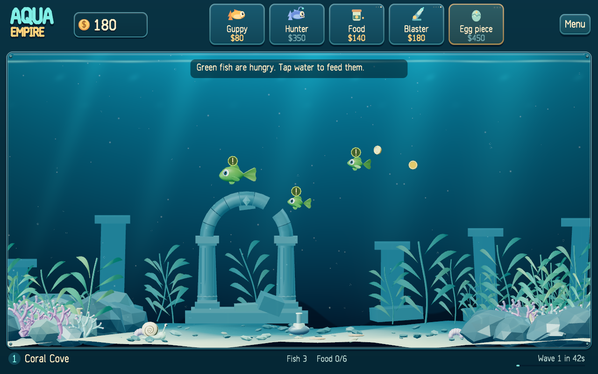

Opening your aquarium...
The guide stays available while the game starts.
An aquarium game by Trent Sterling
Aqua Empire
A little ocean. A big empire.
Feed your fish, catch their coins, and build an aquarium that can fight back. Grow through Coral Cove, Ember Reef and Kelp Nursery, then take on the Broodship.
Play Aqua EmpireFree in your browser. Mouse or touch.

Feed. Grow. Collect. Defend.
Keep the food chain going.
Green fish are hungry. Brown fish are starving. Feed guppies to help them grow and earn better coins; hunters eat guppies instead of pellets. Buy egg pieces to hatch helpers for the next aquarium.
Beat the Broodship, earn the Crown Fish, then keep your aquarium growing in Endless Empire.
- Feed
- Click, tap or hold empty water to drop food.
- Collect
- Move over coins with the mouse, or swipe across them on a touchscreen.
- Defend
- Hold directly on invaders to fire. Release before feeding again.
- Keyboard
- Tab selects controls; Enter activates. Esc or P pauses. Keys 1 to 6 buy shop items.